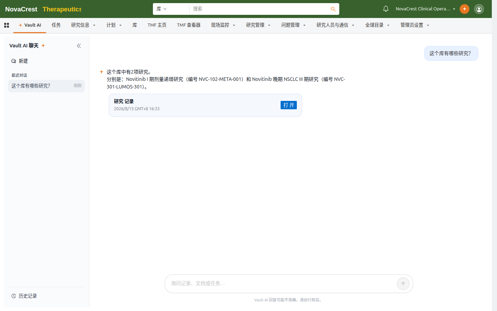
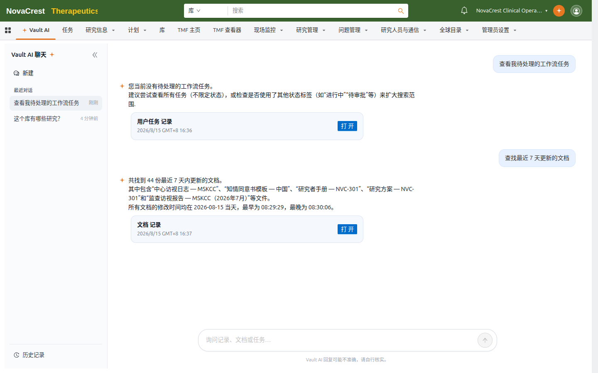
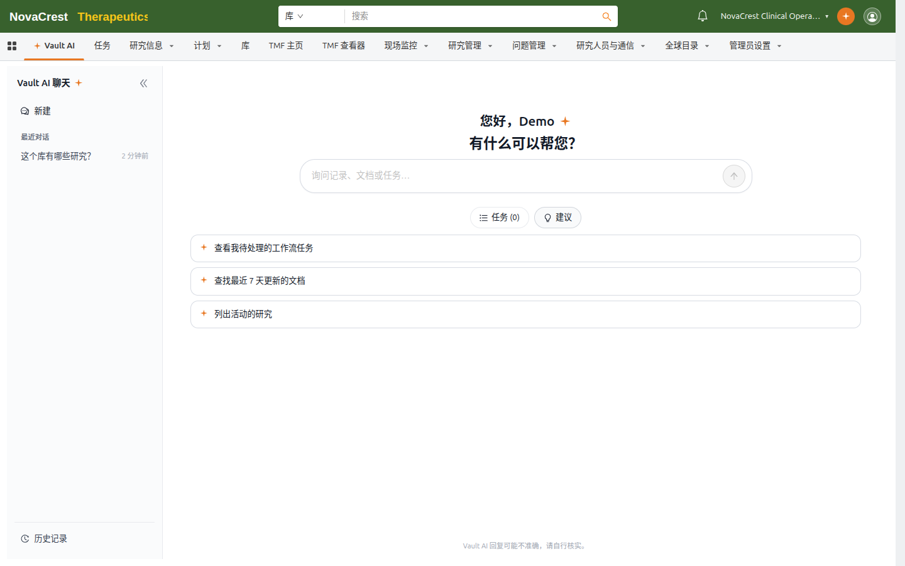

发起对话
在应用程序选项卡中打开 Vault AI 标签页。左侧栏显示 最近对话，点击 新建 开始一轮新对话；点击 历史记录 查看全部对话并跳转。
在输入框用自然语言提问即可，例如：
- "这个库有哪些研究？"
- "查找最近 7 天更新的文档"
- "查看我待处理的工作流任务"
Vault AI 会自动判断需要查询的对象与字段；信息不足时它会先向你澄清（例如询问关注哪个业务领域），再执行查询。
回答中的记录卡片
查询类问题的回答会附带记录卡片：卡片列出命中的记录来源与时间，点击 打开 跳转到预过滤的记录列表，可直接核对明细。

*提问"这个库有哪些研究？"——Vault AI 返回研究清单与记录卡片。*

*提问"查找最近 7 天更新的文档"——返回文档数量、示例与时间范围。*
建议问题
点击输入框上方的 建议 可以展开一组示例问题，点击即可直接提问。这些建议由系统根据当前 Vault 生成，是了解 Vault AI 能力的快捷方式。

*建议问题示例：待处理任务、近期文档、活动研究。*
任务执行状态
输入框上方的 任务 按钮显示 Vault AI 执行的操作任务数量与状态。当前对话有任务在运行时，按钮上的计数会实时更新；点击可查看执行明细。
提示
- 回答底部的 Vault AI 回复可能不准确，请自行核实 提示始终生效；关键数据请回到记录详情页确认。
- 对话在 历史记录 中长期保留；点击 新建 开始的新对话不会删除旧对话。
- 在记录详情页使用 Vault AI 时，问答会围绕该记录展开，详见 在记录上下文中使用 Vault AI。